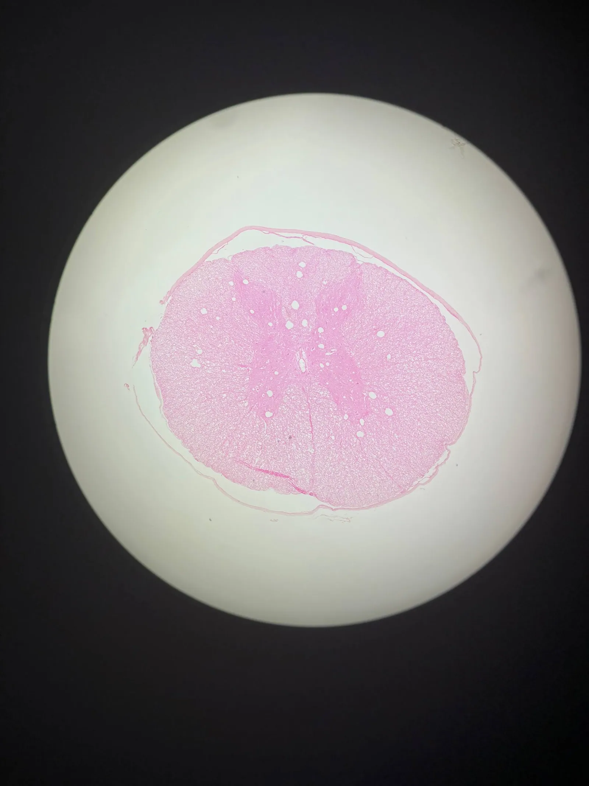
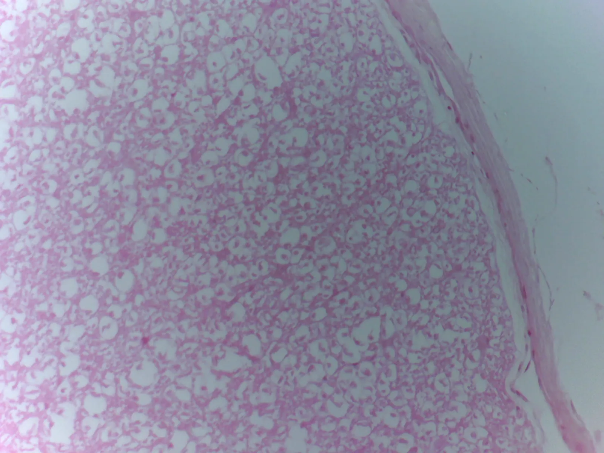
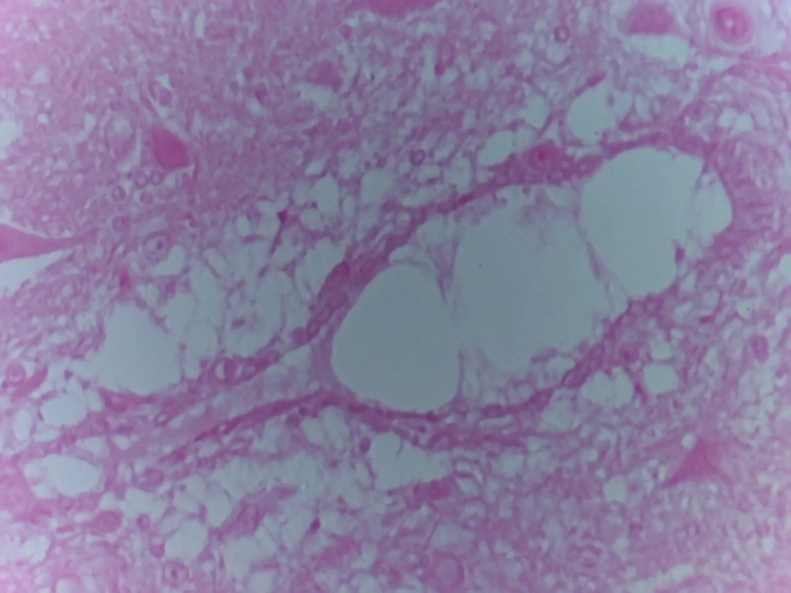
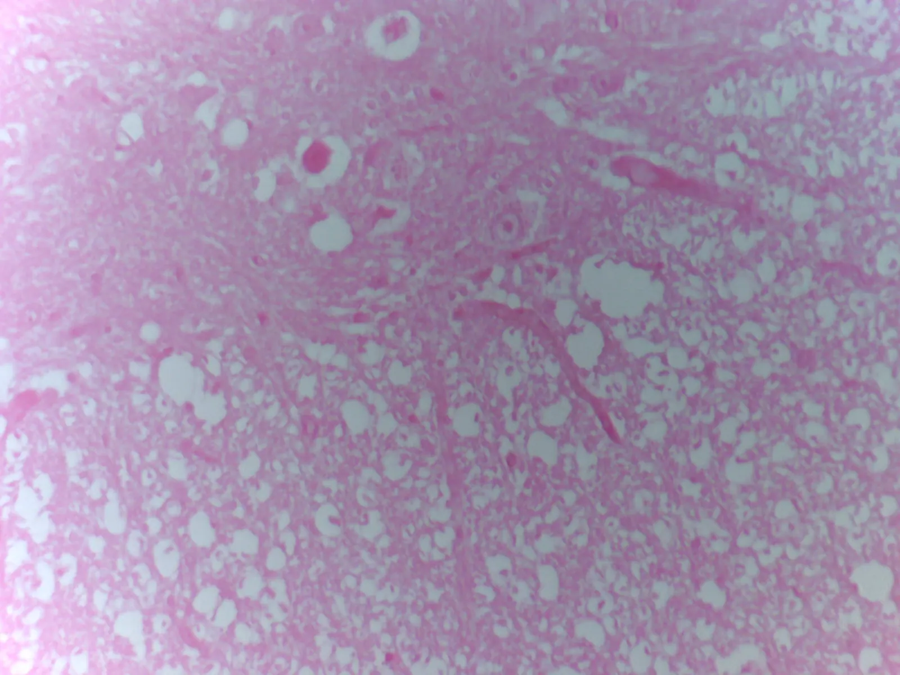

Lâmina 26 · Tecido nervoso
Medula espinal (corte transversal)




Toque na imagem para ampliar. No computador, use as setas do teclado para trocar de imagem.
Lâmina 26 · Tecido nervoso




Toque na imagem para ampliar. No computador, use as setas do teclado para trocar de imagem.